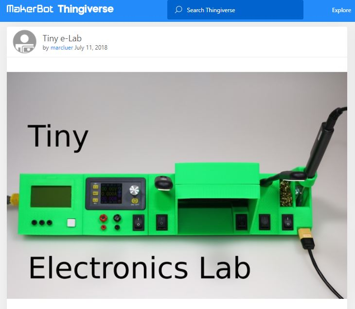
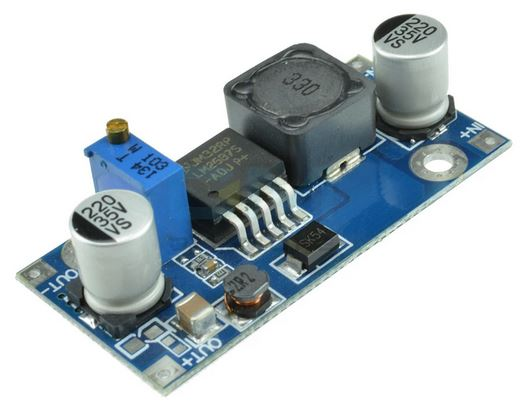
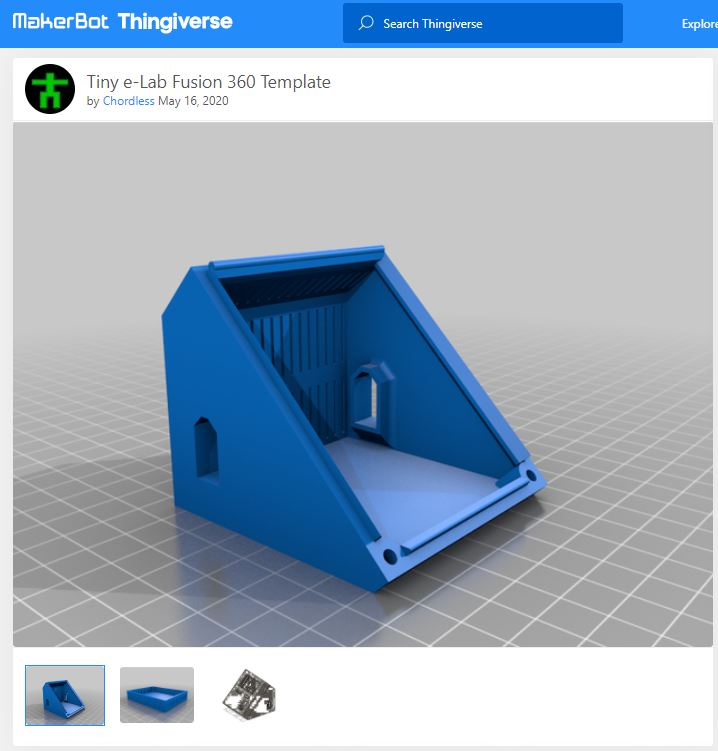

Presentation¶
- Auteur
J.Soranzo
- Date de création
02/2022
- Date dernière maj
21/02/2022
- Societe
VoRoBoTics
- Entity
VoLAB
Contents
Présentation¶
Il s’agit d’un projet de source internet. Je n’en suis pas l’auteur, juste un contributeur.
Je l’ai détecté sur la chaîne du “Guy with the swiss accent”, Andreas Spiess dans la vidéo Creative uses of Power Tool Batteries for Mobile Projects 1
Sur Thingiverse Tiny e-Lab 2 plus complet, auteur marcluer
{kind=link}
Warning
LIDL battery pack + chargeur pas livrée en France par correspondance.
Mais on peut facilement se le procurer en magasin.
Liste des modules qui existent¶
Dans le Thingiverse¶
- Alimentation 02_DPS3005.stl
- LCR meter 03_LCR_v2.stl ou lcr_t4_04.stl
- Fer à souder TS-100 04_TS100-holder_v2.stl et 04_TS100-station_v3_wLED.stl
- fume extractor 05_Fume_Extractor_90mm_v2.stl et 05_Fume_Extractor_90mm_fan_cover_v1.stl
- lampe led : 06_USB-single_v1.stl
Dérivé sur Thingiverse¶
32 dérivés:
- Tiny E-lab Ts100 alternate stand
- Tiny e-lab XCover Pro Pogo Charger (charger de tel avec pogo pins !)
- Tiny e-Lab current Meter (à mettre en début de chaîne !) ****
- E-Lab Power Supply (grosse alim avec plug secteur) **
- Function Generator (aucun lien vers l'éle à mettre dedans)
- DC 580 Module : buck conver alim stabilisée 30V 5A
- Tiny e-lab fan - 80mm
- Tiny e-Lab KSGER T12 Soldering İron
- Tiny e-Lab fume extractor fan cover remix
- Tiny e-Lab rear power supply input
- Tiny e-Lab snap-in covers des portes
- T12 Carbon Fibre Holder ???
- Lidl Parkside X20V Team Battery Adapter for Tiny e-Lab
- Lab Power Supply - Tiny e-Lab Edition by Chordless avec aération et face avant détachable
- Mini soldering tools support Tiny e-lab compatible
- Tiny e-Lab LCR-T4 tester - Remix by Chordless
- Tiny e-Lab single usb mod
- Tiny e-Lab Bosch 18V Battery Adapter *
- Tiny e-Lab Fusion 360 Template by Chordless ***
- Tiny e-Lab Single USB by Chordless avec aération et face avant détachable **
- Tiny e-Lab 12v Hub ne se charge pas !
- Tiny e-Lab T12 Soldering İron STM32 V2.01
- Tiny e-Lab dso138 mini Digital Oscilloscope (le lien vers la ref d'oscillo est cassé) ***
- Tiny e-Lab Dual USB PSU documenté et ventilé et fav détach by Chordless ****
- Tiny e-Lab Dual Usb with Voltmeters and Ammeters a éviter
- LessTiny e-Lab by lhoracek October 21, 2019 non compatible
- Tiny e-Lab DPS alim avec connecteur press fit ****
- LessTiny e-Lab la suite but non compatible
- Tiny e-lab Power Supply
- Tiny e-Lab AD584 Voltage Reference ref de tension 4 canaux *
- Tiny e-Lab Power supply (la meme)
- Tiny e-Lab LCR-T4 tester remix
Parmi tout ces variations celles de Cordless sont les plus intéressantes et en plus il fourni des sources Fusion360 (paramétrables). Ces modèles sont ventilés et à face avant détachable.
Son module dual usb à base de buck mini 360 me parait un peu limité en courant mais l’idée est bonne pour alimenté des Raspi il faudrait des buck plus costaud.
Plus avantageux serait :
{kind=link}
Adaptateur batterie LIDL sur Prusa Printers¶
Sur Prusa Printers Lidl Parkside X20V Team Battery Adapter for Tiny e-Lab 3
Auteur Stanley ou stanoba sur Thingiverse
Inconvénients du projet original sur Thingiverse¶
Pas de site internet dédié au projet et très peut de données sur le câblage des modules.
Fichiers source en .skp (sur Prusa Printers seulement)
A noter que Chordless donne ses source Fusion360 sur Thingiverse 4
{kind=link}
Ce que j’ajouterais bien¶
USB 5A pour Rpi4 à l’image de Tiny e-Lab Dual USB PSU 5 (fichier fusion360 fournis)
Module de début de chaîne U et I avec connectique alim PC
Générateur de trame série
Analyseur de lien série détection de la vitesse et protocole
un début : skjolddesign Handheld-RS232-serial-data-tester 6
Ceux que je vais faire¶
- alim début : le first plug : n'existe pas
- alim stabilis avec connecteur audio
- usb 3A
- station Fer
- éclairage
- voltmetre 2
- amperemetre 2
- lcr meter
- oscillo
- voir accessoir dremel en 19V
Puissance besoin : ? 3x 5A 5V = 75W fer 20W : total 95W sous 19V environ 5A